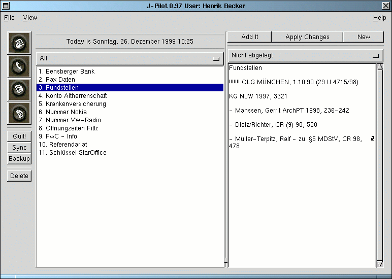

On the left side of the screen there is a list of memos. These can be viewed by category from the menu above them. They will appear in the same order as on the Palm Pilot. If you want change this, you must change it on the Palm Pilot under the menu in the memo program and then sync and switch to another application and back.
To delete a record, just highlight the record and hit the delete button on the left side of the screen.
To add a new record, Press the "Clear" button in the upper right hand corner of the window. Then fill in all of the details of the memo record and then press "Add It". New records will show up in a different color. Once they are synced they will be the same color as existing records.
To modify a record select the record, change the details of the memo and then press the "ApplyChanges" button.